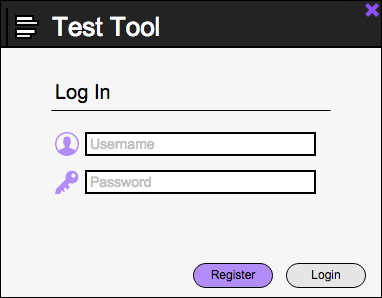

2.1.1. User Login
When a student or instructor first executes the Test Tool application, they will be greeted with the login screen seen in Figure 1.

Figure 1: Login Screen.
The interface presents the student or instructor with Username and Password text entry fields, where a registered user may enter their Log In credentials. The Register button allows new Test Tool users to be taken to a new window where they can register a new Student or Instructor account. The Login button, when clicked, will take an entered Username and Password and authenticate them. If successful, a student will be logged in and shown their tests, and an instructor will be taken to a home screen.
Prev: [none]
| Next: ui overview
| Up: student registration
| Top: index